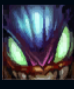
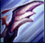
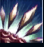
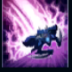
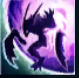

Kha'Zix
| Kha'Zix The Voidreaver | |
|---|---|
| Release date | 27.09.2012 |
| Class | Assassin |
| Positions | Jungle |
| Resource | Mana |
| Range type | Melee |
| Adaptive type | Physical |
| Base statistics | |||
| Health | 573 – 2018 | Mana | 327.2 – 1007.2 |
| Health regen. | 7.5 – 20.25 |
Mana regen. | 7.59 – 16.09 |
| Armor | 36 – 87 | Attack damage | 63 – 115.7 |
| Magic resist. | 32 – 53.25 | Crit. damage | 175% |
| Move. speed | 350 | Attack range | 125 |
''Vidul crește, Vidul se adaptează'', iar Kha'Zix e întruparea perfectă a acestei ideologii. Această creatură oribilă aflată în continuă mutație este mânată de instinctul de a evolua, fiind născută pentru a supraviețui și a-i ucide pe cei puternici. Când se întâmplă să întâmpine obstacole, își dezvoltă mereu o modalitate mai eficientă de a-și contra și ucide victimele. Deși Kha'Zix a fost la început o bestie fără minte, inteligența i-a evoluat odată cu trupul. Acum, creatura își plănuiește cu grijă vânătorile și se folosește până și de teroarea pe care o sădește în sufletele victimelor sale. |  |
AMENINȚARE NEVĂZUTĂ Inamicii din apropiere care sunt izolați de aliații lor sunt însemnați. Abilitățile lui Kha'Zix au interacțiuni specifice cu țintele izolate. Atunci când Kha'Zix nu poate fi văzut de echipa inamică, primește efectul ''Amenințare nevăzută'', iar următorul său atac de bază asupra unui campion inamic va provoca daune magice bonus și îl va încetini timp de câteva secunde. |
||
|---|---|---|---|---|
 |
GUSTĂ-LE FRICA Kha'Zix îi provoacă țintei daune fizice. Daunele cresc în cazul țintelor izolate. Dacă alege să utilizeze ''Evoluție: gheare'', aceasta va returna un procent din timpul său de reactivare la folosirea abilității asupra țintelor izolate. În plus, crește raza de acțiune a atacurilor de bază și a abilității ''Gustă-le frica''. |
|||
 |
SPINUL VIDULUI Kha'Zix aruncă spini care explodează și le provoacă daune fizice inamicilor loviți. Dacă se află și el în raza exploziei, Kha'Zix este vindecat. Dacă alege să utilizeze ''Evoluție: șiruri de spini'', ''Spinul Vidului'' va arunca trei spini într-o zonă în formă de con, va încetini inamicii loviți și va dezvălui campionii inamici loviți timp de 2 secunde. Țintele izolate sunt încetinite suplimentar. |
|||
|  |
SALT Kha'Zix sare într-o zonă și provoacă daune fizice la aterizare. Dacă alege să utilizeze ''Evoluție: aripi'', raza ''Saltului'' va crește cu 200, iar timpul său de reactivare se va reseta la fiecare ucidere sau participare la ucidere de campion. |
|||
 |
ASALTUL VIDULUI La fiecare nivel nou, Kha'Zix își poate evolua una dintre abilități, oferindu-i astfel un efect suplimentar unic. La activare, Kha'Zix devine invizibil și primește efectul ''Amenințare nevăzută'', precum și un bonus la viteza de mișcare. Dacă alege ''Evoluție: adaptare cameleonică'', ''Asaltul Vidului'' poate fi folosit încă o dată, iar durata invizibilității crește. |